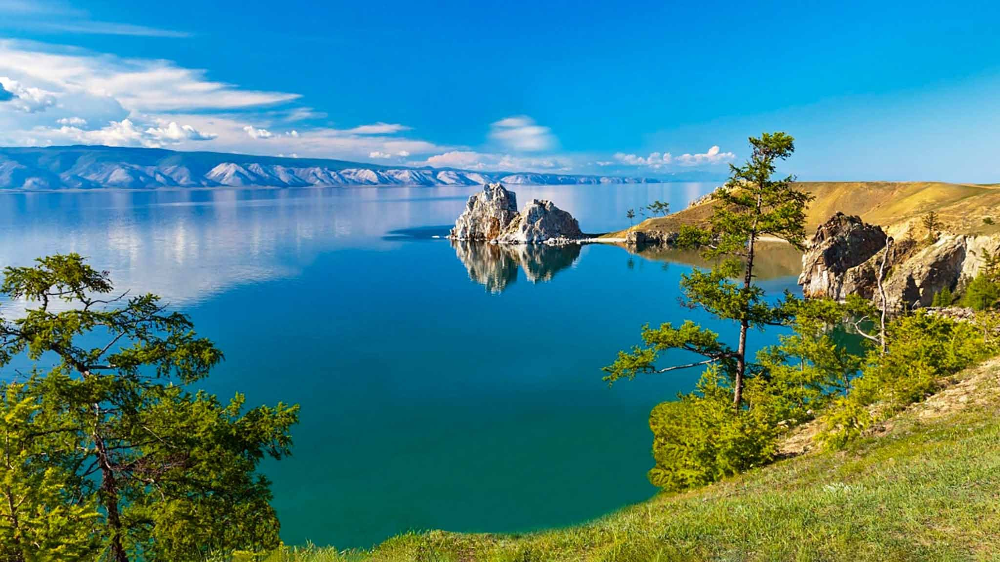
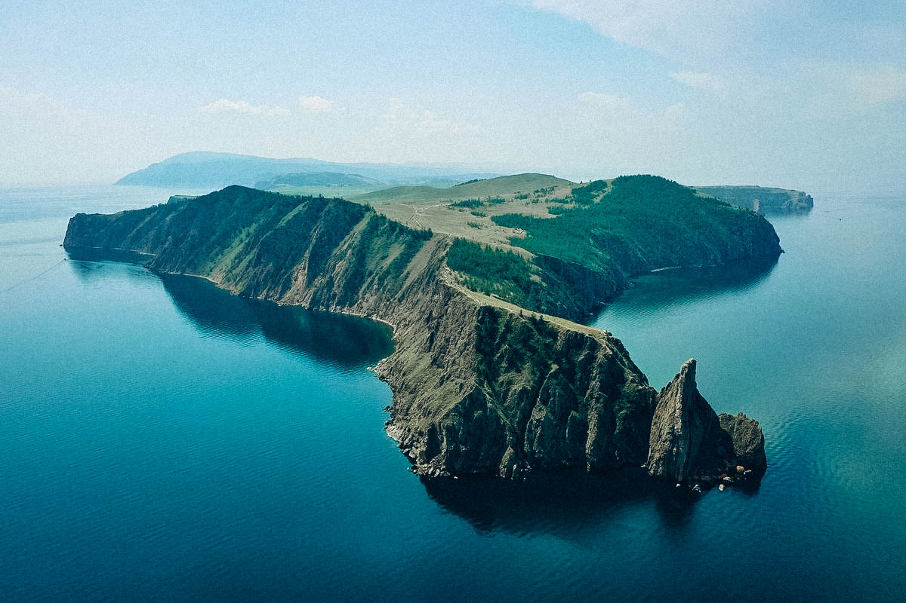
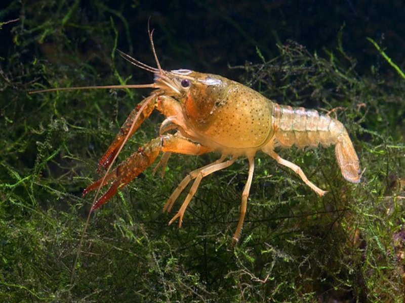
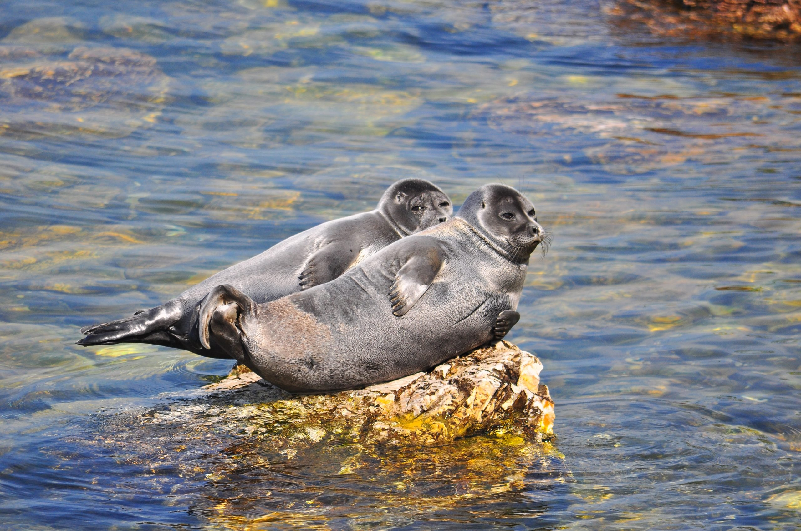

Байка́л (бур. Байгал далай) — озеро тектонического происхождения в южной части Восточной Сибири площадью 31 722 км², самое глубокое озеро на планете, крупнейший природный резервуар пресной воды и самое большое по площади пресноводное озеро Евразии.
Озеро и прибрежные территории являются уникальным биогеоценозом, бо́льшая часть видов животных эндемична. Озеро имеет сток — реку Ангара.
Описание озера

Озеро Байкал
Географическое расположение
Байкал находится в центре Азии, в России, на границе Иркутской области и Республики Бурятия. Озеро протянулось с севера на юго-запад на 636 км в виде гигантского полумесяца. Ширина Байкала колеблется от 25 до 80 км.
Площадь водной поверхности составляет 31 722 км² (без учёта островов), что примерно равно площади таких стран, как Бельгия, Нидерланды или Дания. По площади водного зеркала Байкал занимает шестое место среди крупнейших озёр мира.
Длина береговой линии — 2 100 км.
Озеро находится в своеобразной котловине, со всех сторон окружённой горными хребтами и сопками. При этом западное побережье — скалистое и обрывистое, рельеф восточного побережья — более пологий (местами горы отступают от берега на десятки километров).
Объем и свойства воды
Запасы воды в Байкале гигантские — 23 615,39 км³ (около 19 % от 123 тыс. км³ всех мировых запасов озёрной пресной воды). По объёму запасов пресной воды Байкал занимает первое место в мире среди озёр. В Байкале воды больше, чем во всех вместе взятых пяти Великих озёрах Северной Америки (Верхнее, Мичиган, Гурон, Эри, Онтарио), и в 25 раз больше, чем в Ладожском озере. Если же брать абсолютную величину среди всех озёр мира, то Байкал по объёму воды уступает разве что Каспийскому морю.
Основные свойства байкальской воды можно коротко охарактеризовать так: в ней очень мало растворённых и взвешенных минеральных веществ, ничтожно мало органических примесей, много кислорода.
Температура поверхностных слоёв воды в Байкале летом — +8…+9 °С, а в отдельных заливах — +15 °C. Температура глубинных слоёв — около +4 °C. Вода в озере настолько прозрачна, что отдельные камни и различные предметы бывают видны на глубине 40 м. В это время байкальская вода бывает синего цвета. Летом же и осенью, когда в прогретой солнцем воде развивается масса растительных и животных организмов, прозрачность её снижается до 8−10 м и цвет становится сине-зелёным и зелёным. Чистейшая и прозрачнейшая вода Байкала содержит так мало минеральных солей (100 мг/л), что может использоваться вместо дистиллированной.
Острова и полуострова
На Байкале 27 островов (Ушканьи острова, Ольхон, Ярки и другие). Самый крупный из них — Ольхон (71 км в длину и 12 км в ширину, расположен почти в центре озера у его западного побережья, площадь — 729 км², по другим данным — 700 км²).
Крупными островами признаны 12 островов. Остальные признаются островами малой гряды. Наибольшее сосредоточение островов наблюдается в районе Малого моря. Несколько островов расположены в центре озера и 5 островов находятся в районе Чивыркуйского залива. Крупнейший полуостров — Святой Нос.

Остров Ольхон

Полуостров Святой Нос
Климат
Водная масса Байкала оказывает влияние на климат прибрежной территории. Зима здесь бывает мягче, а лето — прохладнее. Наступление весны на Байкале задерживается на 10—15 дней по сравнению с прилегающими районами, а осень часто бывает довольно продолжительной.
Максимальная зафиксированная температура воздуха — +34 °C, а средняя повышается в последние годы.
Район Байкала отличается большой суммарной продолжительностью солнечного сияния. Например, в посёлке Большое Голоустное она доходит до 2524 часов, что больше, чем на черноморских курортах. Дней без солнца в году в этом же населённом пункте бывает только 37, а на острове Ольхон — 48.
Особые черты климата обусловлены байкальскими ветрами, которые имеют собственные названия — баргузин, сарма, верховик, култук и другие
Растительный и животный мир
По данным Лимнологического института Сибирского отделения РАН, в Байкале обитает 2 630 видов и разновидностей растений и животных, 2/3 которых являются эндемиками, то есть обитают только в этом водоёме. Такое обилие живых организмов объясняется большим содержанием кислорода во всей толще байкальской воды.
Рачок эпишура — эндемик Байкала — составляет до 80 % биомассы зоопланктона озера и является важнейшим звеном в пищевой цепи водоёма. Он выполняет функцию фильтра: пропускает через себя воду, очищая её.
Наиболее интересна в Байкале живородящая рыба голомянка, тело которой содержит до 30 % жира. Она удивляет биологов ежедневными кормовыми миграциями из глубин на мелководье. Из рыб в Байкале водятся омуль, хариус, сиг, осётр, налим, таймень, щука и другие. Байкал уникален среди озёр тем, что на большой глубине здесь произрастают пресноводные губки.
Единственное млекопитающее озера Байка́льская не́рпа (лат. Pusa sibirica) — один из трех пресноводных видов тюленя в мире, эндемик озера Байкал, реликт третичной фауны. Вес от 50 до 130 кг, самки по массе больше самцов. Живут до 55 лет.
По сообщению рыбаков, нерпа попадала в сети на глубине до 200 м, но, как правило, она ныряет на значительно меньшие глубины. Корм нерпа находит в хорошо освещённой зоне (25—30 м) и ей, по-видимому, нет необходимости нырять глубоко. Нерпа способна погружаться до 400 м, и выдерживает давление 21 атм. В экспериментальных условиях (в большом аквариуме), когда её удерживали под водой, нерпа находилась там до 65 мин (рекордная продолжительность). В природе она бывает под водой до 20−25 мин. — этого ей достаточно, чтобы добыть пищу или уйти от опасности.

Рачок эпишура

Байкальская нерпа